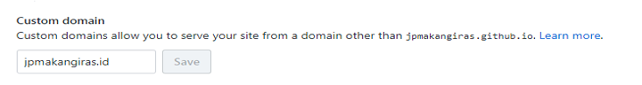
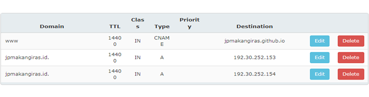

Agar Github Pages yang dimiliki mengarah ke sebuah domain pribadi, kita perlu melakukan beberapa pengaturan dari repo github pages dan penyedia layanan domain.
-
Masuk ke repo github pages anda, lalu klik settings dan pada pilihan custom domain silakan masukkan domain pribadi yang dimiliki 
-
Setelah klik save maka secara otomatis akan ada sebuah file baru dengan nama CNAME di repo anda
-
Langkah selanjutnya adalah masuk ke halaman penyedia domain anda lalu pilih menu yang berkaitan dengan DNS dan atur DNSnya seperti ini 
-
Tunggu sekitar 5-10 menit atau bahkan lebih untuk melihat hasilnya, tergantung masa propagansi dns.